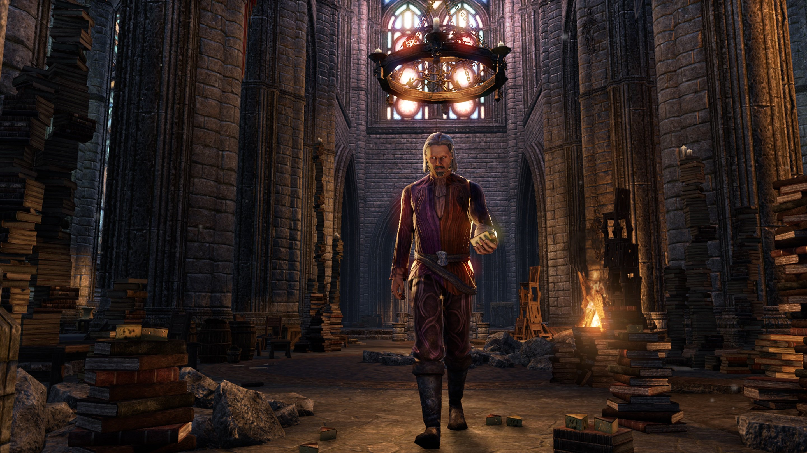

Sheogorath walking through an ancient room filled with old books. There are random blocks of cheese scattered about.
Notable Events, Facts, and Quotes:
- If the Hero of Kvatch attacks Sheogorath in Oblivion, Sheogorath freezes them in-place, and calmly states "You really shouldn't have done that. Enjoy the view!" The player character is then teleported into the sky above the Shivering Isles, causing them to plummet to their death.
- Sheogorath is one of the few Daedric Princes whose creation may be linked to the change or destruction of an Aedra; others include Malacath and Meridia. Aldmeri creation stories attribute his creation to the removal of Lorkhan's "divine spark." In one of these myths, he is described as the "Sithis-shaped hole" of the world.[3] However, in an interview conducted by the Imperial Library, Haskill states this interpretation of the creation of Sheogorath may not be the case.
- "I am a part of you, little mortal. I am a shadow in your subconscious, a blemish on your fragile little psyche. You know me. You just don't know it ... You can call me Ann Marie. But only if you're partial to being flayed alive and having an angry immortal skip rope with your entrails. If not, then call me Sheogorath, Daedric Prince of Madness. Charmed." ―Sheogorath
- Sheogorath often appears on Nirn as a well-dressed elderly gentleman, which many mortals do not expect.
- Sheogorath's status as a Daedric Prince and as a member of the "Four Corners of the House of Troubles" has made his mainstream worship largely taboo. Throughout Tamriel, however, there are small shrines where the devoted worship the madgod in secret. However, there is one holiday that is at least loosely related to Sheogorath. The second of Sun's Dawn is when Mad Pelagius day is celebrated. According to Gwinas, on this day there are great festivals and invocations at the shrines of Sheogorath.
- There are six artifacts made by Sheogorath which are known on the mortal plane. The best-known of these is the staff known as Wabbajack. It can transform a creature into something else, turn them into piles of cheese, or instant death, though it is impossible to predict the result, much like Sheogorath himself
- Sheogorath is one of the easiest Daedric Princes to summon. Although his official summoning date is the second of Sun's Dawn, Sheogorath can be summoned any time there is a storm occurring,[12] or through an offering of a wolf or bear pelt. Another method of invocation is to leave an offering of yarn, lettuce and soul gems at his shrines in the mortal world.
- Sheogorath savors the act of driving mortals insane and/or making them perform actions which can be seen as trivial or silly.[12] He is completely unpredictable, and often comments in nonsensical or otherwise socially unacceptable statements. He often refers to the removal of entrails and has a curious obsession with cheese, which is taken to near hysterical levels in Oblivion
- Sheogorath savors the act of driving mortals insane and/or making them perform actions which can be seen as trivial or silly.[12] He is completely unpredictable, and often comments in nonsensical or otherwise socially unacceptable statements. He often refers to the removal of entrails and has a curious obsession with cheese, which is taken to near hysterical levels in Oblivion
- Sheogorath is the highest-leveled character in Oblivion.
- Sheogorath is one of the many prominent Daedric Princes in the culture of the Khajiit people. In the Khajiit myth of creation, Sheogorath is called "Sheggorath." He is known as the "Skooma Cat" in Elsweyr.
"What is it, mortal? Have you come to be of the service to Sheogorath? That in and of itself speaks toward your madness. This pleases me. Fetch the Fork of Horripliation from the mad hermit near Ald Redaynia. Take care with him. He's not the most... stable man."
-- Sheogorath